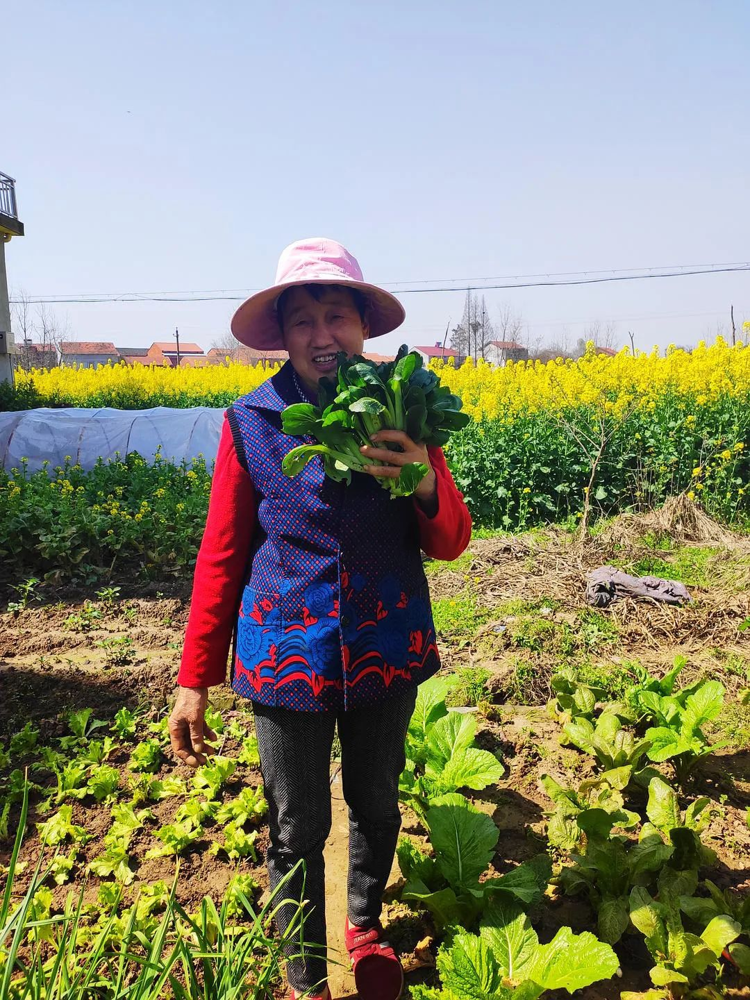
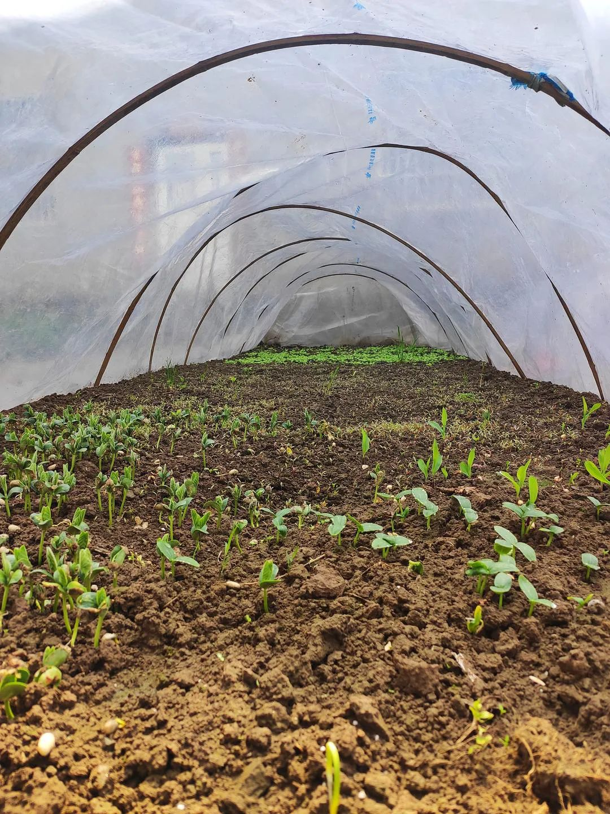

黄冈封城：在疫区，两个儿子的药物传递
原文链接 备份链接 湖北人什么时候能回北京？依然个未知数。青年作家邓安庆的老家湖北黄冈武穴市，离武汉两百公里远。每年春节，他跟千千万万人一样回家乡过年待一周再返岗。1月23日，武汉封城，次日，黄冈以及所管辖的县市也都相应“封城”。直至现 …

垸路上响起了滚轮的声音。起身往楼下看去，阳阳拖着行李箱往垸口走去，他的爷爷奶奶一人拎着一个大包跟在后头送行。而在垸路那边风哥家的屋场，停着一辆面包车，后车厢打开，风哥正把棉被、衣物、布娃娃、新鲜蔬菜堆了进去，看来是要自驾走了。
越来越多的人，开始准备离开。垸微信群里，村干部催促去深圳、广州点对点复工人员赶紧去村委会报名，因为返岗专车名额有限；到重庆、温州的，也有了专车，也要赶紧报名……垸里的年轻人，开始纷纷收拾行李，准备出发了。
不能再等下去了。就我知道的：堂弟一家在无锡开店，一日不去，租金照交，收入全无；泉弟再不去宁波，工作就要没有了；芳姐已经丢了工作，孩子还小，也得马上去浙江那边，重新找份事情做……
两个月的时间，对于他们来说是如此漫长如此焦灼，生计无着，家里老小开销又这么大。问几个同样跟我一样滞留在黄冈的朋友，一个说自己两个月没有工资了，一个做培训工作，收入都是来自于课时费，现在因为去不了，也只好坐吃山空。可以说，大家对于生计的担忧远超过对于疫情的担忧。
下楼目送风哥开车离开，不知道他去了广东，是不是还得隔离十四天。风哥母亲玉儿娘拎着一大袋菜奔到路口，“哎哟，我都忘了把这个给他咯！”站在一旁的琴娘说：“够咯，你看他车里塞满了，你还要么样塞的？”
玉儿娘笑笑，又感慨道：“在屋里待久了，几厌烦哩！人一走，心下又过不得！”琴娘说：“我屋里两个细鬼的，明天走，今天睡到这个时候还不起来！我看他们上班后，还能不能习惯！”玉儿娘把菜放在地上，“哎哟，让他们困觉咯！以后肯定要忙死，能多困就困一会儿。”
玉儿娘瞥见我在，便问：“秀才哎，你么会儿走哦？”我说：“不晓得，现在看文件说，可以去哪里哪里，但最后都会加上一条：北京除外。”琴娘叹一口气，“这有么办法！人家是首都，全世界的人都要涌过来，么招架得住？！现在照我说，最安全的还是俺湖北本地。没得外人进来，待在屋里几好哩。”
琴娘没说出的话我知道，毕竟我在家里上班，工资也是照发的。既然生计不愁，那短时间去不去都无所谓。“庆儿几好哩，在电脑上打字，钱就来咯！几轻松！几快活！你说读书重不重要？”
玉儿娘眯着眼打量我，“不读书的哦，光靠打工，工厂一停工，就过不开命咯！”琴娘啧啧嘴，“也不轻松快活，人家死脑细胞的！写不出来的时候，哭爹叫娘都没得用！哪一行，都不容易！”
我一边听她们你一句我一句地闲聊，一边闻油菜花澎湃的香气。屋前屋后，油菜花开到极盛，眼见得要凋谢了。池塘边的杨柳，鲜绿的新芽绽开，垸口处一树白桃花，也好看得很……等我回过神来时，她们已经不在原处了。
我转身从屋后头走。母亲跟琴娘在菜园说话。我走过去。琴娘正掀开保温塑料膜，跟母亲探头往里看，我也跟着瞄过去。母亲笑道：“生得几好！”
“你看，芽儿都蹭出来了！”琴娘见我在，兴奋地说道。“都是么子芽儿？”我问。“黄豆、玉米、豇豆、黄瓜……你看你看，它们几可爱！等它们都结成果子，你再走吧！”
我还没说话，母亲说：“还真有可能哦，没准黄瓜都结咯，人还没走！”琴娘拍了一下母亲的肩膀，“几好哩！你儿可以多陪你一段时间。”母亲瞥了一眼，笑了笑：“他啊，待那么长时间，会烦死哩。”我说：“我不烦。”
我确实不烦。我已经习惯了在家里的生活，每天准时起床，看书、工作、写字，晚上也会准时睡觉。在北京什么样，在家里还是如此。再说在北京的通勤时间，在家完全省了下来。而父母亲，也习惯了我的存在。
毕竟新屋盖起来这六年，我从未长时间在这个新家里住过，每一年一两周时间，匆匆来，匆匆去。今年一住住这么久，熟悉了新屋的各个角落，也眼见得屋前屋后油菜花从那么矮小的一株株，长到现在这样一大片一大片金黄的花海。如果能赶得上琴娘这些小苗各个结成果，也是不错的。
母亲与琴娘又说起到哪里买菜秧苗来种，毕竟菜园里的菜都吃完了。我插不上话，起身往家里走。琴娘在后面喊道：“庆儿哎，你喜欢吃么子菜？我跟你老娘去买秧苗栽！”
我还没回话，母亲笑着打断：“到时候买秧苗，让他跟着去就行咯。”琴娘说：“是的哦，你管做么子事，他都跟个冬鸡儿一样跟着！”我停住，回头说：“哪有这么夸张哦。”
琴娘看看母亲，又看看我，“你要是走了，你妈该会几难过哩！”母亲撇过头去，“我才不会难过哩。人走了，我几自净哩！”琴娘摇摇头：“要得，你现在这么说。莫到时候人家走，你又在我面前念。”
手机传来工作群的响声，我匆匆赶到楼上，处理工作上的事情。阳光热了起来，羽绒服穿不住，我换上了运动衣。远远地，还能听见琴娘跟母亲说话的声音，间或又有鸟鸣声，过一会儿，又一次响起滚轮的声音，这一次不知道谁哪一家人要走了。
我没有起身再看。离别的场景，终究还是让我难过。渐渐地，人会越来越少，垸里会越来越安静。到时候，又只会剩下父母亲、婶娘们、叔爷们，再一想到这么多人或许此生只能经历这一次如此长时间的团聚，心里莫名地惆怅起来。
忙到快中午了，楼下传来母亲跟人说话的声音。探头看去，是村干部过来了。见到我，村干部说：“庆儿，莫私自回京哈！你要是跑咯，我们都是担责任的。”我说：“晓得，我在家里挺好，不会私自走的。再说我现在哪怕进了北京，小区也不会让我进去的。”
村干部点点头：“是哎，大家都不容易，要相互理解。”又寒暄了几句，他往下一家去了。我正准备回身去继续工作，母亲在下面问：“中午你想吃么子？”我说：“青菜汤就好。”母亲笑：“又是青菜，你也吃不厌哩。”
我问母亲：“你为么子笑得这么开心？”
母亲说：“笑一笑，老来俏。”

发芽了

长按二维码向我转账
受苹果公司新规定影响，微信 iOS 版的赞赏功能被关闭，可通过二维码转账支持公众号。
原文链接 备份链接 湖北人什么时候能回北京？依然个未知数。青年作家邓安庆的老家湖北黄冈武穴市，离武汉两百公里远。每年春节，他跟千千万万人一样回家乡过年待一周再返岗。1月23日，武汉封城，次日，黄冈以及所管辖的县市也都相应“封城”。直至现 …
原文链接 备份链接 “ - 疫 情 之 下 - 父亲作为一家之主，把家里卖粮食的一万多块钱当做货款结给了供应商，按照他交代给我们的原话：“咱们已经吃亏了，就不要再让别人吃亏了，也让人家回家好好过个年。” ” …
原文链接 备份链接 到吃饭时，饭桌上常常只有我一个人。菜薹炒腊肉、青菜豆腐粉丝汤、清炒土豆丝，还有一罐自家做的腐乳。米饭蒸得蓬松，有我极爱闻的米香气。 窗外隔着菜畦是垸路，早晨的阳光洒下，不知从哪里传来零星的狗吠声。前头的叔爷穿过田埂到灶 …
原文链接 备份链接 每天到晚上六点左右，就会听到母亲在楼下喊：“庆儿，我好咯！”我立马回道：“晓得咯，我马上就来！”合上电脑，换上鞋子，戴口罩，拿手机，火速地跑下楼去。母亲就等在楼梯口。 从堂屋穿过时，在前厢房看新闻的父亲转头问：“又要到 …
原文链接 备份链接 被迫宅在家中的四十来天，让时光仿佛倒流二十年，我们回到了那个万事需要自力更生的年代。 没有快递，没有外卖，也没有Tony老师，习惯用钱解决问题的便捷生活暂时离我们而去。但自力更生也让不少人发现，原来，我们对自己的力量一 …